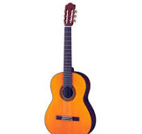
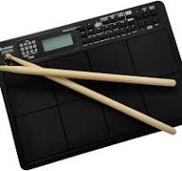

| PAINO |
|
6000 |
The piano is a keyboard instrument that produces sound when the keys are pressed. Most modern pianos have a row of 88 black and white keys: 52 white keys for the notes of the C major scale (C, D, E, F, G, A, and B) and 36 shorter black keys raised above the white keys and set further back, for sharps and flats. This means that the piano can play 88 different pitches (or "notes"), spanning a range of a bit over seven octaves. The black keys are for the "accidentals" (F♯/G♭, G♯/A♭, A♯/B♭, C♯/D♭, and D♯/E♭), which are needed to play in all twelve keys.
There are two main types of piano: the grand piano and the upright piano. The grand piano offers better sound and more precise key control, making it the preferred choice when space and budget allow. The grand piano is also considered a necessity in venues hosting skilled pianists. The upright piano is more commonly used due to its smaller size and lower cost. |
| GUITAR |
 |
3000 |
The guitar is a stringed musical instrument, that is usually fretted (with some exceptions) and typically has six or twelve strings. It is usually held flat against the player's body and played by strumming or plucking the strings with the dominant hand, while simultaneously pressing selected strings against frets with the fingers of the opposite hand. A guitar pick may also be used to strike the strings. The sound of the guitar is projected either acoustically, by means of a resonant hollow chamber on the guitar, or amplified by an electronic pickup and an amplifier.
The guitar is classified as a chordophone – meaning the sound is produced by a vibrating string stretched between two fixed points. Historically, a guitar was constructed from wood with its strings made of catgut. Steel guitar strings were introduced near the end of the nineteenth century in the United States;[1] but only following World War II, did nylon and steel strings become mainstream.[1] The guitar's ancestors include the gittern, the vihuela, the four-course Renaissance guitar, and the five-course baroque guitar, all of which contributed to the development of the modern six-string instrument. |
| PAD |
 |
50000 |
Pad, some holes of woodwind instruments (clarinets, saxophones...) are closed by air-tight pads. Soft, mellow timbres generated by synthesisers are often called pads, and are generally used as backing sounds.
A practice pad or drum pad, is a piece of equipment used by drummers and other percussionists to practice quietly, or to warm up before a performance.
|